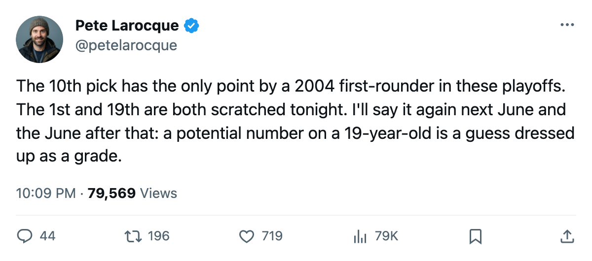
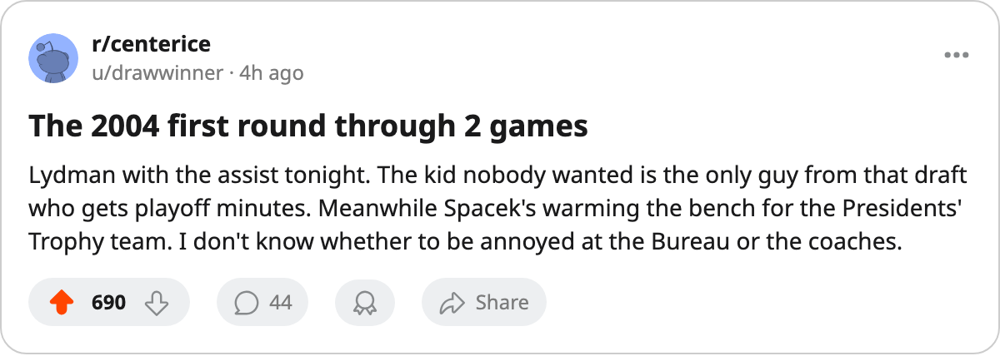

The 10th Pick Has a Point in April. The 1st Has a Press Box Seat.
One first-rounder from 2004 is on the playoff scoresheet. The Bureau gave him 52 potential.
 Pete LarocqueScouting editor · The Prospect File
Pete LarocqueScouting editor · The Prospect File
The piece
Through two games of the opening round, exactly one player drafted in the first round of the 2004 class has registered a point. Tuomas Lydman77 put one assist on the board for  Mighty Ducks of Anaheim against
Mighty Ducks of Anaheim against  Nashville Predators on 2005-04-08. The Bureau's Book carries his potential at 52.
Nashville Predators on 2005-04-08. The Bureau's Book carries his potential at 52.
Fifteen of the 30 first-rounders land on playoff rosters, six dressed and nine scratched. The six dressed carry potential grades from 52 to 76. The nine scratched carry 62 to 96.
The only point belongs to the lowest grade
Lydman took the ice in both games against Nashville. His 76 regular-season games and 18.1 minutes a night made him the most-used first-rounder in the class, and the most-used on a playoff club. The 10th overall selection from June is the only one of the 30 who has touched the scoresheet in April.
The four first-rounders the Bureau pegged at 90 or above potential: Vaclav Spacek80 (91,  Toronto Maple Leafs), Mika Sulku66 (92,
Toronto Maple Leafs), Mika Sulku66 (92,  Calgary Flames), Roger Nylander68 (94,
Calgary Flames), Roger Nylander68 (94,  San Jose Sharks), Andreas Stahle76 (96, Toronto Maple Leafs). Sulku and Nylander are on clubs that missed the field. Spacek and Stahle are on the 133-point Maple Leafs and both are scratched through two games against
San Jose Sharks), Andreas Stahle76 (96, Toronto Maple Leafs). Sulku and Nylander are on clubs that missed the field. Spacek and Stahle are on the 133-point Maple Leafs and both are scratched through two games against  New York Islanders.
New York Islanders.
The ones dressed
Kristian Timander76 went 2nd overall in 2004. He is 21, 73 overall, 66 potential, and dressed for  Dallas Stars in a 2-0 series lead over
Dallas Stars in a 2-0 series lead over  Detroit Red Wings. Forty-one games and 20 points in the regular season. No point in two playoff games. He plays 15.2 minutes a night in a lineup where
Detroit Red Wings. Forty-one games and 20 points in the regular season. No point in two playoff games. He plays 15.2 minutes a night in a lineup where  Mike Modano88 has three goals this spring.
Mike Modano88 has three goals this spring.
Pasi Salminen73 (5th pick,  Pittsburgh Penguins, 63 potential) has 12 assists and 0 goals across 41 games, 17.4 minutes a night. Dressed against
Pittsburgh Penguins, 63 potential) has 12 assists and 0 goals across 41 games, 17.4 minutes a night. Dressed against  New Jersey Devils, no point through two games.
New Jersey Devils, no point through two games.
Patrik Svedberg73 (13th pick,  Tampa Bay Lightning, 72 potential): 68 games, 7 points, 10.5 minutes a night. Ola Asplund73 (16th pick,
Tampa Bay Lightning, 72 potential): 68 games, 7 points, 10.5 minutes a night. Ola Asplund73 (16th pick,  Boston Bruins, 76 potential): 72 games, 11 points, 9.8 minutes. Neither appears in the scoring column for Tampa Bay or Boston through two games.
Boston Bruins, 76 potential): 72 games, 11 points, 9.8 minutes. Neither appears in the scoring column for Tampa Bay or Boston through two games.
Niklas Pesonen69 (20th pick, Detroit Red Wings, 68 potential) has 27 games and 5 points on a club trailing 0-2. He plays 8.3 minutes a night.
| Pick | Player | Club | Status | GP | Pts | MPG | Potential |
|---|---|---|---|---|---|---|---|
| 2 | Kristian Timander | DAL | Dressed | 41 | 20 | 15.2 | 66 |
| 5 | Pasi Salminen | PIT | Dressed | 41 | 12 | 17.4 | 63 |
| 10 | Tuomas Lydman | ANA | Dressed | 76 | 32 | 18.1 | 52 |
| 13 | Patrik Svedberg | TB | Dressed | 68 | 7 | 10.5 | 72 |
| 16 | Ola Asplund | BOS | Dressed | 72 | 11 | 9.8 | 76 |
| 20 | Niklas Pesonen | DET | Dressed | 27 | 5 | 8.3 | 68 |
| 1 | Vaclav Spacek | TOR | Scratched | 50 | 17 | 7.6 | 91 |
| 7 | Marcel Janota79 | CAR | Scratched | 1 | 0 | 60.0 | 89 |
| 15 | Yves Mckay72 | PHX | Scratched | 28 | 6 | 7.9 | 77 |
| 19 | Andreas Stahle | TOR | Scratched | 4 | 0 | 17.8 | 96 |
| 21 | Maxim Zholtok65 | EDM | Scratched | 0 | 0 | 0 | 84 |
| 23 | Leo Lopatin71 | WSH | Scratched | 3 | 0 | 45.3 | 68 |
| 25 | Kirk Vas73 | NSH | Scratched | 5 | 1 | 11.4 | 65 |
| 26 | Yury Stashan68 | COL | Scratched | 0 | 0 | 0 | 62 |
| 30 | Niklas Hassinen66 | DAL | Scratched | 0 | 0 | 0 | 70 |
What the pattern says
The Bureau graded this class from the top down. The 1st pick has 91 potential and 7.6 minutes a night at a 133-point club. The 7th pick is a goaltender who played 1 game all season and sits on the bench for  Carolina Hurricanes trailing 2-0. The 19th pick has 96 potential, the highest in the class, and 4 games played.
Carolina Hurricanes trailing 2-0. The 19th pick has 96 potential, the highest in the class, and 4 games played.
Meanwhile the 9th pick, Tuomo Pihlman76, led the entire 2004 first round in regular-season points with 34 for  Minnesota Wild. The Bureau gave him 56 potential. Minnesota Wild missed the playoffs. The 10th pick has 32 points and a playoff assist. The 1st pick has 17 points and a jersey in the equipment room.
Minnesota Wild. The Bureau gave him 56 potential. Minnesota Wild missed the playoffs. The 10th pick has 32 points and a playoff assist. The 1st pick has 17 points and a jersey in the equipment room.
The 2004 class produced 30 players last June. The draft is 57 days away. The Bureau will grade the 2005 class from the top down, trusting that a high number at 19 means a long career. Through one postseason, the four first-rounders above 90 potential are either scratched or on clubs that missed the field.
Lydman plays 18.1 minutes a night, and that's the whole difference. A coach needed a body on the fourth line for a full season, and the body responded with 32 points. The Bureau will not revise 52 upward on a 32-point season from a 20-year-old. It will look for the next kid with a high number and a low minutes total and call him the future.

